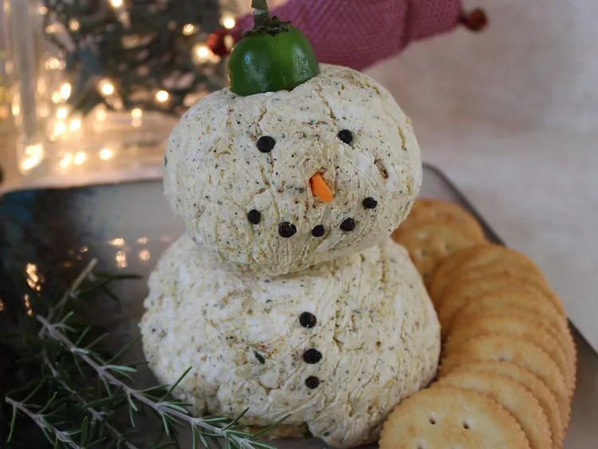

Snowman cheese ball

Invite this adorable snowman cheese ball to your holiday party!
Cajun seasoning, pepper Jack cheese, and ranch dressing mix bring a lot of flavor to this festive appetizer, made to look like a snowman using whole peppercorns and a baby carrot, and wearing a jaunty jalapeno hat. Serve with your favorite crackers.
ingredients
- 2 (8-ounce) packages cream cheese, softened
- 1 (8-ounce) package shredded pepper Jack cheese
- 1 tablespoon salt-free Cajun seasoning, such as T-Don’s Cajun Goods No Salt All Purpose Blend
- 1 (1-ounce) packet ranch dressing mix
- 10 whole peppercorns
- 1 baby carrot
- 1 jalapeno pepper with stem
- crackers for serving
steps
- Mix cream cheese, pepper Jack cheese, Cajun seasoning, and ranch dressing mix together in a large bowl; divide mixture to form one small cheese ball for the head and one larger cheese ball for the body. Wrap and chill in the refrigerator for 4 hours or up to overnight before serving.
- Place larger cheese ball on a serving plate for body. Place smaller cheese ball on top for head. Slice the tip off baby carrot; press into cheese ball for nose. Use whole peppercorns for mouth, eyes, and buttons. Cut the top, with stem, from a jalapeno, and place on top for a hat. Serve with crackers.